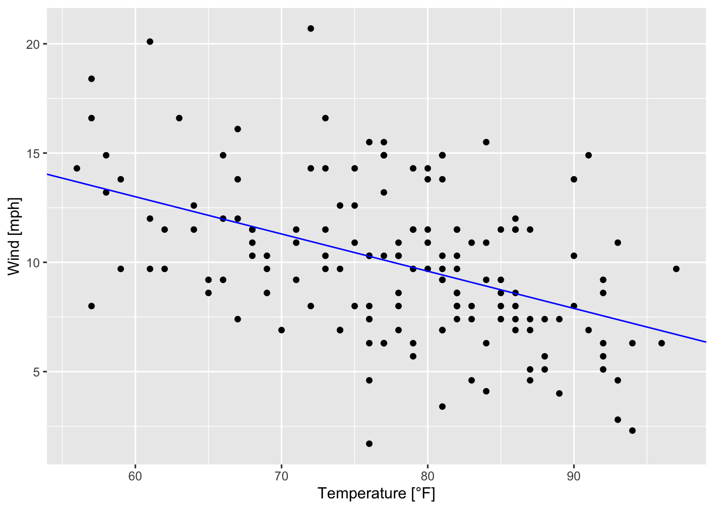

9.3 Proof of Work (PoW)
A proof of work algorithm is an economic measure designed to prevent service abuses, by presenting a puzzle (computational challenge) to the service requester. Solving this puzzle is usually difficult and/or time-consuming but a particular service is only granted if the right solution to the puzzle is presented. Therefore, a proof of work mechanism is an effective way to avoid too many requests to a service. The mentioned puzzle can be for example based on a random process with low probability so that a lot of trial and error is required before a valid solution can be found. However, while there are many random processes with low probability a proof of work needs to have a valid and verifiable solution. The most widely used proof of work system is called Hashcash and implemented into the Bitcoin protocol.
Simple PoW Example
For explanatory purposes, we start by using a simple proof of work system that is easy to understand and easily implementable. Remember that the work to obtain the proof must be feasible on the side of the service requester, but easy to check for the service provider. For our example, we require a service requester to find a number that is divisible by 99 and a given and previously known proof number, which can be done with the following two functions.
# Calculate a new proof of work
proofOfWork <- function(lastProof){
proof <- lastProof + 1
while (!isProofValid(proof, lastProof)){
proof <- proof + 1 # Increment proof by 1 until a valid solution is found.
}
return(proof)
}
# Check if a proof of work is valid
isProofValid <- function(proof, lastProof){
return(proof %% 99 == 0 && proof %% lastProof == 0)
}P1 <- 1 # Initial Proof
P2 <- proofOfWork(lastProof = P1) # Second Proof
P3 <- proofOfWork(lastProof = P2) # Third Proof
P4 <- proofOfWork(lastProof = P3) # Fourth Proof
c(P1, P2, P3, P4)#R> [1] 1 99 198 396While the example hopefully illustrates the principle, it must be kept in mind that this is not a proper proof of work algorithm. It can be easily seen that the sequence of proof numbers follows an identifiable pattern and thus can be calculated directly ( and not spending as much CPU time as desired for the solution).
pvec <- 1 # Initial Proof
for(idx in 1:10){
pvec <- append(pvec,proofOfWork(pvec[idx]))
}
plot(x=1:length(pvec),y=pvec,
xlab="Steps of Proofs", ylab="Proof Number")
Additionally to the predictability of the proof numbers in the simple algorithm our example has numerous additional disadvantages that disqualify it for productive use. In the case of the Hashcash algorithm, the challenge is actually much more randomized and based on hash functions. The challenge is to generate hash values that contain a certain amount of leading zeros. Additionally, there needs to be a mechanism to account for growing computing power, so that new solutions to provided puzzles are found in approximately equal time slices. This in turns means that the difficulty of the puzzles needs to be adjustable.
Combining PoW and Hashing
A good proof of work algorithm for cryptocurrencies should not only be adjustable in terms of its difficulty but should also be random, so that it is not possible to predict its outcome and save computing power. It is therefore comparable to a lottery. A more in-depth example for a proof of work algorithm is shown in the following code snippet.
proofOfWork <- function(block){
hashedBlock <- hashBlock(block)
targetHashBeginning <- paste0(rep(0, block$difficulty),collapse = "")
while( !(substr(hashedBlock$hash,1,block$difficulty) == targetHashBeginning) ){
hashedBlock$nonce <- hashedBlock$nonce + 1
hashedBlock <- hashBlock(hashedBlock)
}
return(hashedBlock)
}For a practical example let us use the genesis block that we just created as the starting point for our own blockchain and feed it to the new proofOfWork function after setting the difficulty to a moderate value.
#R> user system elapsed
#R> 0.024 0.000 0.024genesisBlock$difficulty <- 3
system.time(proofOfWork(genesisBlock)) # Execute again with increased difficulty#R> user system elapsed
#R> 0.469 0.044 0.563